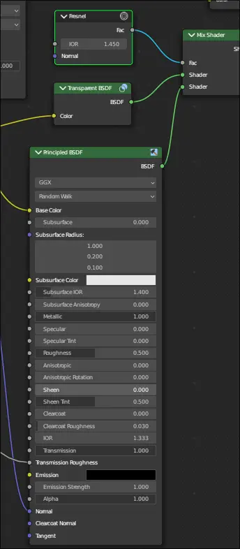

Attempt 2 at making an RTX water shader
EDIT 6/22/2023: I’ve changed the caustics to use Diffuse Ray & Camera Ray instead of Shadow Ray and edited the post accordingly. If screenshots don’t look like they match, that’s why.
So in yesterday’s post I mentioned how a long time ago I attempted to make a water shader based off of RTX Minecraft.
Well, I’ve been playing around on my laptop and I think I’ve gotten closer. I present to you, RTX Water Shader V2: Electric Booga- slap

But before I release it, we got to talk about how we got here.
Looking at Screenshots for a little too long #
Yesterday when talking about my first attempt, I showed some screenshots of how water looks in RTX Minecraft.


Let’s disect this into 2 parts: surface and underwater rays
Surface #
Let’s take another look at the first screenshot:
We see a couple of things:
- The water is transparent when close to the camera, but reflective when farther away
- The reflections aren’t sharp by any means, but they’re strong
- The water isn’t pure blue, it’s a slight blueish-green (though that might be due to the biome)
So lets start with the water color:
These 6 nodes will act as the basis for everything else. Now we need to emulate that “transparent up close, reflective far” effect".
Fresnel #
Fresnel occurs due to light hitting a surface at different angles. The following diagram from Scratch a Pixel helps to illustrate:

In light physics, when a ray hits a surface, it bounces back at the same angle that it was at before. For example, if \(\theta_i\) is the angle of the incoming ray, and \(\theta_r\) is the angle of the reflected ray, then $$ \theta_i = \theta_r $$
Alright this is fancy, but how does this tie in with water? We’ll, it’s a matter of perspective. From far away, the rays that that hit and are reflected are very steep, so it appears as glossy. Close up meanwhile, the angle isn’t as steep, so it appears as transparent.
I still need to fix the reflection and refraction of this water shader, but we’ve disected a lot so far. Now let’s move on.
Underwater Rays #
Let’s look at the other screenshots:
A big part of RTX water are the underwater rays. They inherit the color of the surface water, and they’re also extremely powerful.
Normally we would use refraction to create these rays, but:
- Cycles sucks at brute force refraction
- These rays are very Minecrafty
So we need to fake the effect. Thankfully, that’s easy.
The first step is to use volumetrics. The reason we have rays appear in the first place is because they’re being scattered around by particles before eventually being completely absorbed by said particles. Without volumetrics, no rays will appear. We can do this by creating a cube, scale it so it’s entirely underwater, and then set the material to Principled Volume BSDF with the Color set to pure white:
Next we must create a texture that will allow us to let light pass through some areas (but not all). Since we want something Minecrafty, we can use a white noise texture (scaled down extremely) and clamp it to be purely black and white. To allow us to animate the texture, we set it to 4D and animate the W value. We can then apply our texture to the result, and then use that as the color for a Transparent BSDF node:

To make this only affect shadows, we would normally use the Is Shadow Ray output of the Light path node, but I’ve combined a Is Diffuse Ray and Is Camera Ray to reduce how strong the light passing through is. In this case, we check to see if a diffuse ray is at max 0.1 before then letting it through. Afterwards, we use camera ray to make the surface not a weird combination of the mask and water surface.
And that’s really all there is to the water shader. I’ve went ahead and added it to my resources page if you’re interested in downloading this, and I’ll cya later!